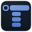
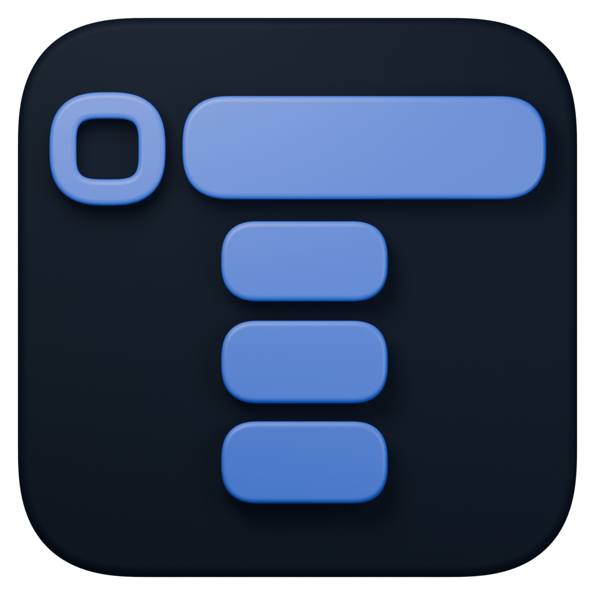
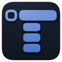
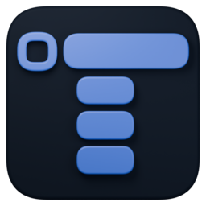
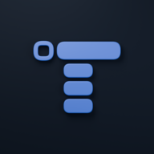

tekne / icon preview
Four rows · Blue on midnightThe approved icon, from browser tab to desktop.

A little depth.
A clear silhouette.
Original proportions, four rows, a dark tile, and transparent outer corners.
Preview background
Actual pixel sizes
32 px
48 px
64 px

128 px
192 pxIn context
Browser tab
tekne.app
Desktop dock
System masking

The maskable export uses extra space around the mark so mobile launchers can crop it without cutting off the logo.